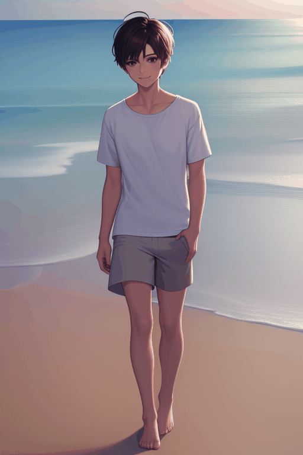
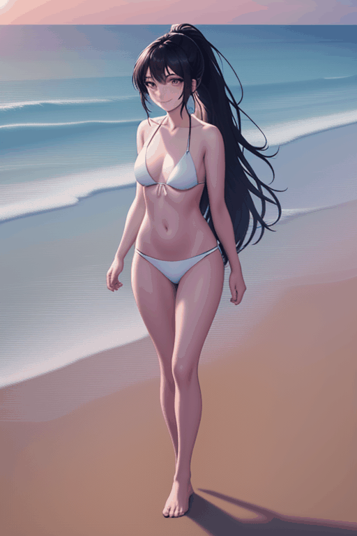

生成完整角色動畫 - 1

使用提示詞:
"0" : "beautiful young girl, spring garden, gentle breeze, floral dress, delicate hair accessories, soft smile, cherry blossoms floating, sunlight, detailed face, silky hair, vibrant colors, highly detailed, anime style",
"10" : "beautiful young girl, spring garden, gentle breeze, floral dress, delicate hair accessories, soft smile, cherry blossoms floating, sunlight, detailed face, silky hair, vibrant colors, highly detailed, anime style",
"20" : "beautiful young girl, spring garden, gentle breeze, floral dress, delicate hair accessories, soft smile, cherry blossoms floating, sunlight, detailed face, silky hair, vibrant colors, highly detailed, anime style",
"30" : "beautiful young girl, bright summer day, short-sleeved light dress, straw hat, clear blue sky, warm sunshine, fresh green grass, energetic expression, soft wind moving hair, detailed eyes, vivid lighting, highly detailed, anime style",
"40" : "beautiful young girl, bright summer day, short-sleeved light dress, straw hat, clear blue sky, warm sunshine, fresh green grass, energetic expression, soft wind moving hair, detailed eyes, vivid lighting, highly detailed, anime style",
"50" : "beautiful young girl, bright summer day, short-sleeved light dress, straw hat, clear blue sky, warm sunshine, fresh green grass, energetic expression, soft wind moving hair, detailed eyes, vivid lighting, highly detailed, anime style",
"60" : "beautiful young girl, autumn park, cozy sweater, slim jeans, strong autumn breeze, golden fallen leaves flying, warm orange sunlight, natural smile, hair flowing in wind, cinematic lighting, detailed face, highly detailed, anime style",
"70" : "beautiful young girl, autumn park, cozy sweater, slim jeans, strong autumn breeze, golden fallen leaves flying, warm orange sunlight, natural smile, hair flowing in wind, cinematic lighting, detailed face, highly detailed, anime style",
"80" : "beautiful young girl, autumn park, cozy sweater, slim jeans, strong autumn breeze, golden fallen leaves flying, warm orange sunlight, natural smile, hair flowing in wind, cinematic lighting, detailed face, highly detailed, anime style",
"90" : "beautiful young girl, snowy winter day, thick down jacket, wool hat, earmuffs, warm gloves, snowflakes falling, cold breath visible, soft winter sunlight, rosy cheeks, cozy atmosphere, ultra detailed face, cinematic lighting, anime style",
"100" : "beautiful young girl, snowy winter day, thick down jacket, wool hat, earmuffs, warm gloves, snowflakes falling, cold breath visible, soft winter sunlight, rosy cheeks, cozy atmosphere, ultra detailed face, cinematic lighting, anime style",
"110" : "beautiful young girl, snowy winter day, thick down jacket, wool hat, earmuffs, warm gloves, snowflakes falling, cold breath visible, soft winter sunlight, rosy cheeks, cozy atmosphere, ultra detailed face, cinematic lighting, anime style"
使用負面提示詞:
(bad quality, worst quality:1.2)
|
生成完整角色動畫 - 2

使用提示詞:
"0" : "1boy, handsome young man, short textured hair, casual beachwear, lightweight linen shirt, beige shorts, barefoot walking on beach, early morning seaside, gentle ocean waves, clear sky, soft sunrise lighting, relaxed smile, wind blowing hair, cinematic photography, highly detailed face",
"10" : "1boy, handsome young man, short textured hair, casual beachwear, lightweight linen shirt, beige shorts, barefoot walking on beach, early morning seaside, gentle ocean waves, clear sky, soft sunrise lighting, relaxed smile, wind blowing hair, cinematic photography, highly detailed face",
"20" : "1boy, handsome young man, short textured hair, casual beachwear, lightweight linen shirt, beige shorts, barefoot walking on beach, early morning seaside, gentle ocean waves, clear sky, soft sunrise lighting, relaxed smile, wind blowing hair, cinematic photography, highly detailed face",
"30" : "1boy, attractive young man, short messy hair, tropical beach outfit, sleeveless white shirt, khaki shorts, sunglasses, standing on sunny beach, turquoise ocean, bright blue sky, palm trees, warm sunlight, summer vacation vibes, confident expression, ultra detailed",
"40" : "1boy, attractive young man, short messy hair, tropical beach outfit, sleeveless white shirt, khaki shorts, sunglasses, standing on sunny beach, turquoise ocean, bright blue sky, palm trees, warm sunlight, summer vacation vibes, confident expression, ultra detailed",
"50" : "1boy, attractive young man, short messy hair, tropical beach outfit, sleeveless white shirt, khaki shorts, sunglasses, standing on sunny beach, turquoise ocean, bright blue sky, palm trees, warm sunlight, summer vacation vibes, confident expression, ultra detailed",
"60" : "1boy, handsome young man, short black hair, open linen shirt, casual beach pants, walking by beach at sunset, golden hour lighting, orange sky, sea breeze, hair flowing in wind, relaxed expression, cinematic lighting, warm atmosphere, highly detailed skin texture",
"70" : "1boy, handsome young man, short black hair, open linen shirt, casual beach pants, walking by beach at sunset, golden hour lighting, orange sky, sea breeze, hair flowing in wind, relaxed expression, cinematic lighting, warm atmosphere, highly detailed skin texture",
"80" : "1boy, handsome young man, short black hair, open linen shirt, casual beach pants, walking by beach at sunset, golden hour lighting, orange sky, sea breeze, hair flowing in wind, relaxed expression, cinematic lighting, warm atmosphere, highly detailed skin texture",
"90" : "1boy, handsome young man, stylish dark beach jacket, loose beach pants, standing on quiet night beach, starry sky, full moon, moonlight reflecting on ocean, cool night breeze, calm expression, dramatic cinematic lighting, realistic photography, ultra detailed",
"100" : "1boy, handsome young man, stylish dark beach jacket, loose beach pants, standing on quiet night beach, starry sky, full moon, moonlight reflecting on ocean, cool night breeze, calm expression, dramatic cinematic lighting, realistic photography, ultra detailed",
"110" : "1boy, handsome young man, stylish dark beach jacket, loose beach pants, standing on quiet night beach, starry sky, full moon, moonlight reflecting on ocean, cool night breeze, calm expression, dramatic cinematic lighting, realistic photography, ultra detailed"
使用負面提示詞:
(bad quality, worst quality:1.2)，low quality, blurry, bad anatomy, extra fingers, ugly face, old man, duplicate body, bad hands, deformed fingers, mutated hands, watermark, text, poorly drawn face
|
生成完整角色動畫 - 3

使用提示詞:
"0" : "1girl, beautiful young woman, long black hair in ponytail, white bikini, morning beach, barefoot walking on sand, soft sunrise lighting, gentle ocean waves, clear sky, fresh sea breeze, natural smile, hair flowing in wind, cinematic photography, highly detailed face, smooth skin",
"10" : "1girl, beautiful young woman, long black hair in ponytail, white bikini, morning beach, barefoot walking on sand, soft sunrise lighting, gentle ocean waves, clear sky, fresh sea breeze, natural smile, hair flowing in wind, cinematic photography, highly detailed face, smooth skin",
"20" : "1girl, beautiful young woman, long black hair in ponytail, white bikini, morning beach, barefoot walking on sand, soft sunrise lighting, gentle ocean waves, clear sky, fresh sea breeze, natural smile, hair flowing in wind, cinematic photography, highly detailed face, smooth skin",
"30" : "1girl, attractive young woman, black ponytail, stylish tropical bikini, sunny beach, bright noon sunlight, crystal clear blue ocean, sparkling water reflections, palm trees, relaxed pose, summer vacation vibe, healthy body, confident smile, ultra detailed skin texture, realistic lighting",
"40" : "1girl, attractive young woman, black ponytail, stylish tropical bikini, sunny beach, bright noon sunlight, crystal clear blue ocean, sparkling water reflections, palm trees, relaxed pose, summer vacation vibe, healthy body, confident smile, ultra detailed skin texture, realistic lighting",
"50" : "1girl, attractive young woman, black ponytail, stylish tropical bikini, sunny beach, bright noon sunlight, crystal clear blue ocean, sparkling water reflections, palm trees, relaxed pose, summer vacation vibe, healthy body, confident smile, ultra detailed skin texture, realistic lighting",
"60" : "1girl, beautiful young woman, black ponytail, elegant bikini, sunset beach, golden hour lighting, orange sky, warm sunlight on skin, sea breeze, hair moving naturally, romantic atmosphere, standing near shoreline, cinematic lighting, detailed face, highly realistic photography",
"70" : "1girl, beautiful young woman, black ponytail, elegant bikini, sunset beach, golden hour lighting, orange sky, warm sunlight on skin, sea breeze, hair moving naturally, romantic atmosphere, standing near shoreline, cinematic lighting, detailed face, highly realistic photography",
"80" : "1girl, beautiful young woman, black ponytail, elegant bikini, sunset beach, golden hour lighting, orange sky, warm sunlight on skin, sea breeze, hair moving naturally, romantic atmosphere, standing near shoreline, cinematic lighting, detailed face, highly realistic photography",
"90" : "1girl, beautiful young woman, black ponytail, luxury dark bikini, quiet night beach, full moon, starry sky, moonlight reflecting on ocean, wet sand reflections, cool sea breeze, calm expression, dramatic cinematic lighting, glowing skin highlights, ultra detailed photography",
"100" : "1girl, beautiful young woman, black ponytail, luxury dark bikini, quiet night beach, full moon, starry sky, moonlight reflecting on ocean, wet sand reflections, cool sea breeze, calm expression, dramatic cinematic lighting, glowing skin highlights, ultra detailed photography",
"110" : "1girl, beautiful young woman, black ponytail, luxury dark bikini, quiet night beach, full moon, starry sky, moonlight reflecting on ocean, wet sand reflections, cool sea breeze, calm expression, dramatic cinematic lighting, glowing skin highlights, ultra detailed photography"
使用負面提示詞:
(bad quality, worst quality:1.2)，low quality, blurry, bad anatomy, extra fingers, bad hands, deformed body, duplicate limbs, poorly drawn face, mutated hands, extra arms, watermark, text, ugly face
|